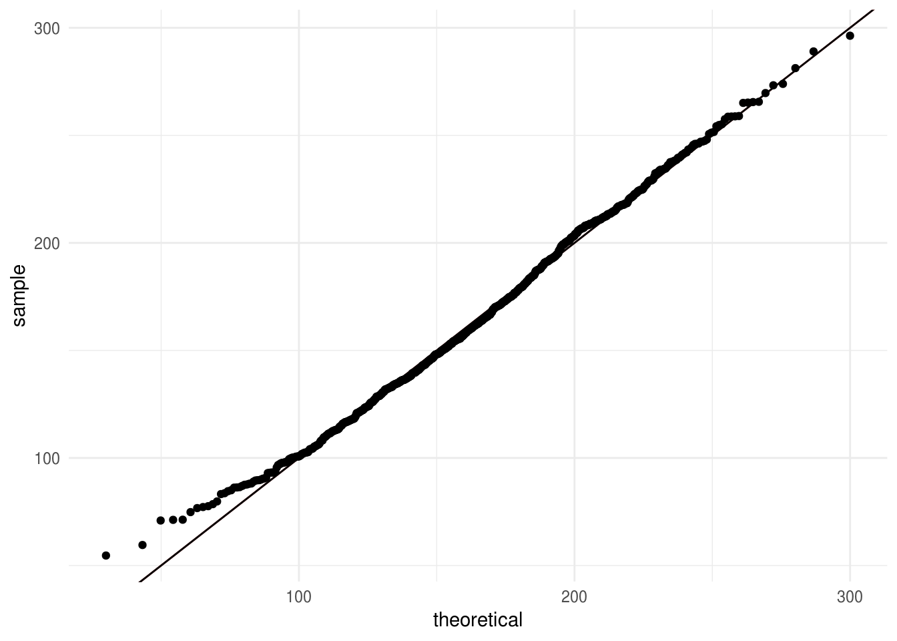

6.6 Más alla de muestras aleatorias simples
Introdujimos el bootstrap en el contexto de muestras aleatorias, esto es, suponiendo que las observaciones son independientes; en este escenario basta con aproximar la distribución desconocida \(P\) usando la dsitribución empírica \(P_n\), y el cálculo de los estadísticos es inmediato. Hay casos en los que el mecanismo que generó los datos es más complicado, por ejemplo, cuando tenemos dos muestras, en diseños de encuestas complejas o en series de tiempo.
Ejemplo: Dos muestras
En el ejemplo de experimentos clínicos de aspirina y ataques de de corazón, podemos pensar el modelo probabilístico \(P\) como al grupo control y otra al grupo de tratamiento, entonces las observaciones de cada grupo provienen de distribuciones distintas y el método bootstrap debe tomar en cuenta esto al generar las muestras.
Ejemplo: Bootstrap en muestreo de encuestas
La necesidad de estimaciones confiables junto con el uso eficiente de recursos conllevan a diseños de muestras complejas. Estos diseños típicamente usan las siguientes técnicas: muestreo sin reemplazo de una población finita, muestreo sistemático, estratificación, conglomerados, ajustes a no-respuesta, postestratificación. Como consecuencia, los valores de la muestra suelen no ser independientes.
La complejidad de los diseños de encuestas conlleva a que el cálculo de errores estándar sea muy complicado, para atacar este problema hay dos técnicas básicas: 1) un enfoque analítico usando linearización, 2) métodos de remuestreo como bootstrap. El incremento en el poder de cómputo ha favorecido los métodos de remuestreo pues la linearización requiere del desarrollo de una fórmula para cada estimación y supuestos adicionales para simplificar.
En 1988 Rao and Wu (1988) propusieron un método de bootstrap para diseños estratificados multietápicos con reemplazo de UPMs que describimos a continuación.
ENIGH. Usaremos como ejemplo la Encuesta Nacional de Ingresos y Gastos de los Hogares, ENIGH 2014 (INEGI 2014), esta encuesta usa un diseño de conglomerados estratificado.
Antes de proceder a bootstrap debemos entender como se seleccionaron los datos, esto es, el diseño de la muestra:
Unidad primaria de muestreo (UPM). Las UPMs están constituidas por agrupaciones de viviendas. Se les denomina unidades primarias pues corresponden a la primera etapa de selección, las unidades secundarias (USMs) serían los hogares.
Estratificación. Los estratos se construyen en base a estado, ámbito (urbano, complemento urbano, rural), características sociodemográficas de los habitantes de las viviendas, características físicas y equipamiento. El proceso de estratificación resulta en 888 subestratos en todo el ámbito nacional.
La selección de la muestra es independiente para cada estrato, y una vez que se obtiene la muestra se calculan los factores de expansión que reflejan las distintas probabilidades de selección. Después se llevan a cabo ajustes por no respuesta y por proyección (calibración), esta última busca que distintos dominios de la muestra coincidan con la proyección de población de INEGI.
concentrado_hogar <- read_csv("data/concentradohogar.csv")
concentrado_hogar
#> # A tibble: 19,479 x 132
#> folioviv foliohog ubica_geo ageb tam_loc est_socio est_dis upm
#> <chr> <int> <chr> <chr> <int> <int> <chr> <chr>
#> 1 0100008… 1 010010001 028-6 1 4 005 00670
#> 2 0100008… 1 010010001 028-6 1 4 005 00670
#> 3 0100008… 1 010010001 028-6 1 4 005 00670
#> 4 0100008… 1 010010001 028-6 1 4 005 00670
#> 5 0100010… 1 010010001 028-6 1 4 005 00600
#> 6 0100010… 1 010010001 028-6 1 4 005 00600
#> 7 0100010… 1 010010001 028-6 1 4 005 00600
#> 8 0100010… 1 010010001 028-6 1 4 005 00600
#> 9 0100010… 1 010010001 028-6 1 4 005 00600
#> 10 0100018… 1 010010001 029-0 1 3 004 00570
#> # ... with 19,469 more rows, and 124 more variables: factor_hog <int>,
#> # clase_hog <int>, sexo_jefe <int>, edad_jefe <int>, educa_jefe <chr>,
#> # tot_integ <int>, hombres <int>, mujeres <int>, mayores <int>,
#> # menores <int>, p12_64 <int>, p65mas <int>, ocupados <int>,
#> # percep_ing <int>, perc_ocupa <int>, ing_total <dbl>, ing_cor <dbl>,
#> # ing_mon <dbl>, trabajo <dbl>, sueldos <dbl>, horas_extr <dbl>,
#> # comisiones <dbl>, otra_rem <dbl>, negocio <dbl>, noagrop <dbl>,
#> # industria <dbl>, comercio <dbl>, servicios <dbl>, agrope <dbl>,
#> # agricolas <dbl>, pecuarios <dbl>, reproducc <int>, pesca <int>,
#> # otros_trab <dbl>, rentas <dbl>, utilidad <dbl>, arrenda <dbl>,
#> # transfer <dbl>, jubilacion <dbl>, becas <dbl>, donativos <dbl>,
#> # remesas <dbl>, bene_gob <dbl>, otros_ing <dbl>, gasto_nom <dbl>,
#> # autoconsum <dbl>, remu_espec <dbl>, transf_esp <dbl>,
#> # transf_hog <dbl>, trans_inst <dbl>, estim_alqu <dbl>,
#> # percep_tot <dbl>, percep_mon <dbl>, retiro_inv <dbl>, prestamos <dbl>,
#> # otras_perc <dbl>, erogac_nom <dbl>, gasto_tot <dbl>, gasto_cor <dbl>,
#> # gasto_mon <dbl>, alimentos <dbl>, ali_dentro <dbl>, cereales <dbl>,
#> # carnes <dbl>, pescado <dbl>, leche <dbl>, huevo <dbl>, aceites <dbl>,
#> # tuberculo <dbl>, verduras <dbl>, frutas <dbl>, azucar <dbl>,
#> # cafe <dbl>, especias <dbl>, otros_alim <dbl>, bebidas <dbl>,
#> # ali_fuera <dbl>, tabaco <dbl>, vesti_calz <dbl>, vestido <dbl>,
#> # calzado <dbl>, vivienda <dbl>, alquiler <dbl>, pred_cons <dbl>,
#> # agua <dbl>, energia <dbl>, limpieza <dbl>, cuidados <dbl>,
#> # utensilios <dbl>, enseres <dbl>, salud <dbl>, atenc_ambu <dbl>,
#> # hospital <dbl>, medicinas <dbl>, transporte <dbl>, publico <dbl>,
#> # foraneo <dbl>, adqui_vehi <dbl>, mantenim <dbl>, refaccion <dbl>, …
# seleccionar variable de ingreso corriente
hogar <- concentrado_hogar %>%
mutate(jefe_hombre = sexo_jefe == 1) %>%
select(folioviv, foliohog, est_dis, upm, factor_hog, ing_cor, sexo_jefe, edad_jefe) %>%
group_by(est_dis) %>%
mutate(
n = n_distinct(upm), # número de upms por estrato
jefa_50 = (sexo_jefe == 2) & (edad_jefe > 50)
) %>%
ungroup()
head(hogar)
#> # A tibble: 6 x 10
#> folioviv foliohog est_dis upm factor_hog ing_cor sexo_jefe edad_jefe
#> <chr> <int> <chr> <chr> <int> <dbl> <int> <int>
#> 1 0100008… 1 005 00670 694 39787. 2 77
#> 2 0100008… 1 005 00670 694 19524. 1 64
#> 3 0100008… 1 005 00670 694 99258. 1 60
#> 4 0100008… 1 005 00670 694 87884. 1 79
#> 5 0100010… 1 005 00600 660 84427. 1 72
#> 6 0100010… 1 005 00600 660 232014. 1 67
#> # ... with 2 more variables: n <int>, jefa_50 <lgl>Para el cálculo de estadísticos debemos usar los factores de expansión, por ejemplo el ingreso trimestral total sería:
sum(hogar$factor_hog * hogar$ing_cor / 1000)
#> [1] 1.26e+09y ingreso trimestral medio (miles pesos)
sum(hogar$factor_hog * hogar$ing_cor / 1000) / sum(hogar$factor_hog)
#> [1] 39.7Veamos ahora como calcular el error estándar siguiendo el bootstrap de Rao y Wu:
- En cada estrato se seleccionan con reemplazo \(m_h\) UPMs de las \(n_h\) de la muestra original. Denotamos por \(m_{hi}^*\) el número de veces que se seleccionó la UPM \(i\) en el estrato \(h\) (de tal manera que \(\sum m_{hi}^*=m_h\)). Creamos una replicación del ponderador correspondiente a la \(k\)-ésima unidad (USM) como:
\[d_k^*=d_k \bigg[\bigg(1-\sqrt{\frac{m_h}{n_h - 1}}\bigg) + \bigg(\sqrt{\frac{m_h}{n_h - 1}}\frac{n_h}{m_h}m_{h}^*\bigg)\bigg]\]
donde \(d_k\) es el inverso de la probabilidad de selección. Si \(m_h<(n_h -1)\) todos los pesos definidos de esta manera serán no negativos. Calculamos el peso final \(w_k^*\) aplicando a \(d_k^*\) los mismos ajustes que se hicieron a los ponderadores originales.
Calculamos el estadístico de interés \(\hat{\theta}\) usando los ponderadores \(w_k^*\) en lugar de los originales \(w_k\).
Repetimos los pasos 1 y 2 \(B\) veces para obtener \(\hat{\theta}^{*1},\hat{\theta}^{*2},...,\hat{\theta}^{*B}\).
Calculamos el error estándar como: \[\hat{se}_B = \bigg\{\frac{\sum_{b=1}^B[\hat{\theta}^*(b)-\hat{\theta}^*(\cdot)]^2 }{B}\bigg\}^{1/2}\]
Podemos elegir cualquier valor de \(m_h \geq 1\), el más sencillo es elegir \(m_h=n_h-1\), en este caso: \[d_k^*=d_k \frac{n_h}{n_h-1}m_{hi}^*\] en este escenario las unidades que no se incluyen en la muestra tienen un valor de cero como ponderador. Si elegimos \(n_h \ne n_h-1\) las unidades que no están en la muestra tienen ponderador distinto a cero, si \(m_h=n_h\) el ponderador podría tomar valores negativos.
Implementemos el bootstrap de Rao y Wu a la ENIGH, usaremos \(m_h=n_h-1\)
# creamos una tabla con los estratos y upms
est_upm <- hogar %>%
distinct(est_dis, upm, n)
hogar_factor <- est_upm %>%
split(.$est_dis) %>% # dentro de cada estrato tomamos muestra (n_h-1)
map_df(~sample_n(., size = first(.$n) - 1, replace = TRUE)) %>%
add_count(upm) %>% # calculamos m_hi*
left_join(hogar, by = c("est_dis", "upm", "n")) %>%
mutate(factor_b = factor_hog * nn * n / (n - 1))
# unimos los pasos anteriores en una función para replicar en cada muestra bootstrap
svy_boot <- function(est_upm, hogar){
m_hi <- est_upm %>%
split(.$est_dis) %>%
map(~sample(.$upm, size = first(.$n) - 1, replace = TRUE)) %>%
flatten_chr() %>%
plyr::count() %>%
select(upm = x, m_h = freq)
m_hi %>%
mutate(upm = as.character(upm)) %>%
left_join(hogar, by = c("upm")) %>%
mutate(factor_b = factor_hog * m_h * n / (n - 1))
}
set.seed(1038984)
boot_rep <- rerun(500, svy_boot(est_upm, hogar))
# Aplicación a ingreso medio
media <- function(w, x) sum(w * x) / sum(w)
# La media es:
hogar %>%
summarise(media = media(factor_hog, ing_cor))
#> # A tibble: 1 x 1
#> media
#> <dbl>
#> 1 39719.Y el error estándar:
map_dbl(boot_rep, ~media(w = .$factor_b, x = .$ing_cor)) %>% sd()
#> [1] 946El método bootstrap está implementado en el paquete survey y más recientemente
en srvyr que es una versión tidy que utiliza las funciones en survey.
Podemos comparar nuestros resultados con la implementación en survey.
# 1. Definimos el diseño de la encuesta
library(survey)
library(srvyr)
enigh_design <- hogar %>%
as_survey_design(ids = upm, weights = factor_hog, strata = est_dis)
# 2. Elegimos bootstrap como el método para el cálculo de errores estándar
set.seed(7398731)
enigh_boot <- enigh_design %>%
as_survey_rep(type = "subbootstrap", replicates = 500)
# 3. Así calculamos la media
enigh_boot %>%
srvyr::summarise(mean_ingcor = survey_mean(ing_cor))
#> # A tibble: 1 x 2
#> mean_ingcor mean_ingcor_se
#> <dbl> <dbl>
#> 1 39719. 1008.
# cuantiles
svyquantile(~ing_cor, enigh_boot, quantiles = seq(0.1, 1, 0.1), interval.type = "quantile")
#> Statistic:
#> ing_cor
#> q0.1 10622
#> q0.2 14775
#> q0.3 18597
#> q0.4 22682
#> q0.5 27186
#> q0.6 32726
#> q0.7 40057
#> q0.8 51990
#> q0.9 76285
#> q1 4150377
#> SE:
#> ing_cor
#> q0.1 144
#> q0.2 165
#> q0.3 193
#> q0.4 218
#> q0.5 239
#> q0.6 348
#> q0.7 484
#> q0.8 769
#> q0.9 1322
#> q1 1318629Supongamos que queremos calcular la media para los hogares con jefe de familia mujer mayor a 50 años.
# Creamos datos con filter y repetimos lo de arriba
hogar_mujer <- filter(hogar, jefa_50)
est_upm_mujer <- hogar_mujer %>%
distinct(est_dis, upm, n)
# bootstrap
boot_rep_mujer <- rerun(500, svy_boot(est_upm_mujer, hogar_mujer))
# media y error estándar
hogar_mujer %>%
summarise(media = media(factor_hog, ing_cor))
#> # A tibble: 1 x 1
#> media
#> <dbl>
#> 1 35259.
# usamos bootstrap para calcular los errores estándar
map_dbl(boot_rep_mujer, ~media(w = .$factor_b, x = .$ing_cor)) %>% sd()
#> [1] 1789Comparemos con los resultados de srvyr. ¿qué pasa?
library(srvyr)
enigh_boot %>%
srvyr::group_by(jefa_50) %>%
srvyr::summarise(mean_ingcor = survey_mean(ing_cor))
#> # A tibble: 2 x 3
#> jefa_50 mean_ingcor mean_ingcor_se
#> <lgl> <dbl> <dbl>
#> 1 FALSE 40412. 949.
#> 2 TRUE 35259. 1988.Sub-poblaciones como “jefas de familia mayores a 50” se conocen como un dominio, esto es un subgrupo cuyo tamaño de muestra es aleatorio. Este ejemplo nos recalca la importancia de considerar el proceso en que se generó la muestra para calcular los errores estándar bootstrap.
map_dbl(boot_rep,
function(x){hm <- filter(x, jefa_50); media(w = hm$factor_b, x = hm$ing_cor)}) %>%
sd()
#> [1] 1965Resumiendo:
El bootstrap de Rao y Wu genera un estimador consistente y aproximadamente insesgado de la varianza de estadísticos no lineales y para la varianza de un cuantil.
Este método supone que la seleccion de UPMs es con reemplazo; hay variaciones del estimador bootstrap de Rao y Wu que extienden el método que acabamos de estudiar; sin embargo, es común ignorar este aspecto, por ejemplo Mach et al estudian las propiedades del estimador de varianza bootstrap de Rao y Wu cuando la muestra se seleccionó sin reemplazo.
6.6.1 Intervalos de confianza
Hasta ahora hemos discutido la idea detrás del bootstrap y como se puede usar para estimar errores estándar. Comenzamos con el error estándar pues es la manera más común para describir la precisión de una estadística.
En términos generales, esperamos que \(\bar{x}\) este a una distancia de \(\mu_P\) menor a un error estándar el 68% del tiempo, y a menos de 2 errores estándar el 95% del tiempo.
Estos porcentajes están basados el teorema central del límite que nos dice que bajo ciertas condiciones (bastante generales) de \(P\) la distribución de \(\bar{x}\) se aproximará a una distribución normal:
\[\bar{x} \overset{\cdot}{\sim} N(\mu_P,\sigma_P^2/n)\]
Algunos ejemplos de como funciona el Teorema del Límite Central, la idea es ver como se aproxima la distribución muestral de la media (cuando las observaciones provienen de distintas distribuciones) a una Normal conforme aumenta el tamaño de muestra. Para esto, aproximamos la distribución muestral de la media usando simulación.
Vale la pena observar que hay distribuciones que requieren un mayor tamaño de muestra \(n\) para lograr una buena aproximación (por ejemplo la log-normal), ¿a qué se debe esto?
Para la opción de Elecciones tenemos una poblac ión de tamaño \(N=143,437\) y el objetivo es estimar la media del tamaño de la lista nominal de las casillas (datos de las elecciones presidenciales de 2012). Podemos ver como mejora la aproximación Normal de la distribución muestral conforme aumenta el tamaño de muestra \(n\); sin embargo, también sobresale que no es necesario tomar una muestra demasiado grande (\(n = 60\) ya es razonable).
knitr::include_app("https://tereom.shinyapps.io/15-TLC/", height = "1000px")A pesar de que los errores estándar suelen usarse para construir intervalos de confianza basados en que las estimaciones tienen una distribución normal; sin embargo, el bootstrap se puede usar para estimar la función de distribución de \(\hat{\theta}\) por lo que no es necesario hacer supuestos distribucionales para \(\hat{\theta}\) sino que podemos estimarla como parte del proceso de construir intervalos de confianza.
Para estudiar intervalos de confianza usaremos el siguiente ejemplo: supongamos que queremos estimar la kurtosis de una base de datos que consta de 799 tiempos de espera entre pulsasiones de un nervio (Cox, Lewis 1976). \[\hat{\theta} = t(P_n) =\frac{1/n \sum_{i=1}^n(x_i-\hat{\mu})^3}{\hat{\sigma}^3}\]
nerve <- read_delim("data/nerve.txt", "\t", escape_double = FALSE,
col_names = FALSE, trim_ws = TRUE)
#> Parsed with column specification:
#> cols(
#> X1 = col_double(),
#> X2 = col_double(),
#> X3 = col_double(),
#> X4 = col_double(),
#> X5 = col_double(),
#> X6 = col_double()
#> )
nerve_long <- tidyr::gather(nerve, col, val, X1:X6) %>%
filter(!is.na(val))
kurtosis <- function(x){
n <- length(x)
1 / n * sum((x - mean(x)) ^ 3) / sd(x) ^ 3
}
theta_hat <- kurtosis(nerve_long$val)
theta_hat
#> [1] 1.76
kurtosis_boot <- function(x, n){
x_boot <- sample(x, n, replace = TRUE)
kurtosis(x_boot)
}
B <- 2000
kurtosis <- rerun(B, kurtosis_boot(nerve_long$val, length(nerve_long$val))) %>%
flatten_dbl()- Comencemos recordando el Intervalo Normal:
\[(\hat{\theta}- z^{(1-\alpha)}\cdot \hat{se}, \hat{\theta}-z^{(\alpha)}\cdot \hat{se})\]
este intervalo no es preciso cuando \(\hat{\theta}\) no se distribuye Normal.
li_normal <- round(theta_hat - 1.96 * sd(kurtosis), 2)
ls_normal <- round(theta_hat + 1.96 * sd(kurtosis), 2)Veamos un histograma de las replicaciones bootstrap de \(\hat{\theta}*\)
nerve_kurtosis <- data_frame(kurtosis)
hist_nerve <- ggplot(nerve_kurtosis, aes(x = kurtosis)) +
geom_histogram(binwidth = 0.05, fill = "gray30") +
geom_vline(xintercept = c(li_normal, ls_normal, theta_hat),
color = c("black", "black", "red"), alpha = 0.5)
qq_nerve <- ggplot(nerve_kurtosis) +
geom_abline(color = "red", alpha = 0.5) +
stat_qq(aes(sample = kurtosis), dparams = list(mean = mean(kurtosis), sd = sd(kurtosis)))
grid.arrange(hist_nerve, qq_nerve, ncol = 2, newpage = FALSE)
En el ejemplo anterior el supuesto de normalidad parece razonable, veamos como se comparan los cuantiles de la estimación de la distribución de \(\hat{\theta}\) con los cuantiles de una normal:
comma(q_kurt <- quantile(kurtosis, probs = c(0.025, 0.05, 0.1, 0.9, 0.95, 0.975)))
comma(qnorm(p = c(0.025, 0.05, 0.1, 0.9, 0.95, 0.975), mean = theta_hat,
sd = sd(kurtosis)))
#> 2.5% 5% 10% 90% 95% 97.5%
#> "1.4" "1.5" "1.5" "1.9" "2.0" "2.0"
#> [1] "1.4" "1.5" "1.6" "2.0" "2.0" "2.1"Esto sugiere usar los cuantiles del histograma bootstrap para definir los límites de los intervalos de confianza:
- Percentiles. Denotemos por \(G\) la función de distribución acumulada de \(\hat{\theta}^*\) el intervalo percentil de \(1-2\alpha\) se define por los percentiles \(\alpha\) y \(1-\alpha\) de \(G\) \[(\theta^*_{\%,inf}, \theta^*_{\%,sup}) = (G^{-1}(\alpha), G^{-1}(1-\alpha))\]
Por definición \(G^{-1}(\alpha)=\hat{\theta}^*(\alpha)\), esto es, el percentil \(100\cdot \alpha\) de la distribución bootstrap, por lo que podemos escribir el intervalo bootstrap como \[(\theta^*_{\%,inf}, \theta^*_{\%,sup})=(\hat{\theta}^*(\alpha),\hat{\theta}^*(1-\alpha))\]
ggplot(arrange(nerve_kurtosis, kurtosis)) +
stat_ecdf(aes(x = kurtosis)) +
geom_segment(data = data_frame(x = c(-Inf, -Inf, q_kurt[c(1, 6)]),
xend = q_kurt[c(1, 6, 1, 6)], y = c(0.025, 0.975, 0, 0),
yend = c(0.025, 0.975, 0.025, 0.975)), aes(x = x, xend = xend, y = y,
yend = yend), color = "red", size = 0.4, alpha = 0.5) +
labs(x = "Cuantiles muestrales", y = "ecdf")
Las expresiones regulares hacen referencia a la situación bootstrap ideal donde el número de replicaciones bootstrap es infinito, en la práctica usamos aproximaciones. Y se procede como sigue:
Intervalo percentil:
Generamos B muestras bootstrap independientes \(\textbf{x}^{*1},..., \textbf{x}^{*B}\) y calculamos las replicaciones \(\hat{\theta}^{*b}=s(x^{*b}).\)
- Sea \(\hat{\theta}^{*}_B(\alpha)\) el percentil \(100\cdot\alpha\) de la distribución empírica de \(\hat{\theta}^{*}\), y \(\hat{\theta}^{*}_B(\alpha)\) el correspondiente al percentil \(100\cdot (1-\alpha)\), escribimos el intervalo de percentil \(1-2\alpha\) como \[(\theta^*_{\%,inf}, \theta^*_{\%,sup})\approx(\hat{\theta}^*_B(\alpha),\hat{\theta}^*_B(1-\alpha))\]
ls_per <- round(quantile(kurtosis, prob = 0.975), 2)
li_per <- round(quantile(kurtosis, prob = 0.025), 2)
stringr::str_c(li_normal, ls_normal, sep = ",")
stringr::str_c(li_per, ls_per, sep = ",")
#> [1] "1.44,2.07"
#> [1] "1.43,2.05"Si la distribución de \(\hat{\theta}^*\) es aproximadamente normal, entonces los intervalos normales y de percentiles serán similares. El teorema del límite central nos dice que conforme \(n\) se acerca a infinito el histograma bootstrap adquirirá una forma similar a la normal; sin embargo, cuando el tamaño de muestra es chico habrá diferencias.
Con el fin de comparar los intervalos creamos un ejemplo de simulación (ejemplo tomado de Effron y Tibshirani), generamos una muestra de tamaño 10 de una distribución normal estándar, supongamos que el parámetro de interés es \(e^{\mu}\) donde \(\mu\) es la media poblacional.
set.seed(137612)
x <- rnorm(10)
boot_sim_exp <- function(){
x_boot <- sample(x, size = 10, replace = TRUE)
exp(mean(x_boot))
}
theta_boot <- rerun(1000, boot_sim_exp()) %>% flatten_dbl()
theta_boot_df <- data_frame(theta_boot)
hist_emu <- ggplot(theta_boot_df, aes(x = theta_boot)) +
geom_histogram(fill = "gray30", binwidth = 0.08)
qq_emu <- ggplot(theta_boot_df) +
geom_abline(color = "red", alpha = 0.5) +
stat_qq(aes(sample = theta_boot),
dparams = list(mean = mean(theta_boot), sd = sd(theta_boot)))
grid.arrange(hist_emu, qq_emu, ncol = 2, newpage = FALSE)
La distribución empírica de \(\hat{\theta}^*\) es asimétrica, por lo que no esperamos que coincidan los intervalos.
# Normal
round(exp(mean(x)) - 1.96 * sd(theta_boot), 2)
#> [1] 0.33
round(exp(mean(x)) + 1.96 * sd(theta_boot), 2)
#> [1] 1.62
#Percentil
round(quantile(theta_boot, prob = 0.025), 2)
#> 2.5%
#> 0.54
round(quantile(theta_boot, prob = 0.975), 2)
#> 97.5%
#> 1.78La inspección del histograma deja claro que la aproximación normal no es conveniente en este caso, veamos que ocurre cuando aplicamos la transformación logarítmica.
hist_log <- ggplot(data_frame(theta_boot), aes(x = log(theta_boot))) +
geom_histogram(fill = "gray30", binwidth = 0.08)
qq_log <- ggplot(data_frame(theta_boot)) +
geom_abline(color = "red", alpha = 0.5) +
stat_qq(aes(sample = log(theta_boot)),
dparams = list(mean = mean(log(theta_boot)), sd = sd(log(theta_boot))))
grid.arrange(hist_log, qq_log, ncol = 2, newpage = FALSE)
Y los intervalos se comparan:
# Normal
round(mean(x) - 1.96 * sd(log(theta_boot)), 2)
#> [1] -0.64
round(mean(x) + 1.96 * sd(log(theta_boot)), 2)
#> [1] 0.59
#Percentil
round(quantile(log(theta_boot), prob = 0.025), 2)
#> 2.5%
#> -0.62
round(quantile(log(theta_boot), prob = 0.975), 2)
#> 97.5%
#> 0.58La transformación logarítmica convierte la distribución de \(\hat{\theta}\) en normal y por tanto los intervalos de \(\hat{\phi}^*=log(\hat{\theta}^*)\) son similares. La forma normal no es sorprendente pues \(\hat{\phi}^*=\bar{x}^*\).
Si mapeamos los intervalos normales calculados para \(log(\hat{\theta}^*)\) de regreso a la escala de \(\theta\) obtenemos intervalos similares a los calculados para \(\hat{\theta}^*\) usando percentiles:
exp(round(mean(x) - 1.96 * sd(log(theta_boot)), 2))
#> [1] 0.527
exp(round(mean(x) + 1.96 * sd(log(theta_boot)), 2))
#> [1] 1.8Podemos ver que el método de aplicar una transformación, calcular intervalos usando la normal y aplicar la transformación inversa para volver a la escala original genera intervalos de confianza atractivos, el problema con este método es que requiere que conozcamos la transformación adecuada para cada parámetro. Por otra parte, podemos pensar en el método del percentil como un algoritmo que incorpora la transformación de manera automática.
Existen otras alternativas al método del percentil y cubren otras fallas del intervalo normal. Por ejemplo, hay ocasiones en que \(\hat{\theta}\) tiene una distribución normal sesgada: \[\hat{\theta} \approx N(\theta + sesgo, \hat{se}^2)\]
en este caso no existe una transformación \(m(\theta)\) que arregle el intervalo.
- Intervalos acelerados y corregidos por sesgo. Esta es una versión mejorada del intervalo de percentil, la denotamos \(BC_{a}\) (bias-corrected and accelerated).
Usaremos un ejemplo de Effron y Tibshirani, los datos constan de los resultados en dos pruebas espaciales de 26 niños con algún problema neurológico. Supongamos que queremos calcular un intervalo de confianza de 90% para \(\theta=var(A)\). El estimador plugin es: \[\hat{\theta}=\sum_{i=1}^n(A_i-\bar{A})^2/n\] notemos que el estimador plug-in es ligeramente menor que el estimador usual insesgado: \[\hat{\theta}=\sum_{i=1}^n(A_i-\bar{A})^2/(n-1)\]
library(bootstrap)
data(spatial)
ggplot(spatial) +
geom_point(aes(A, B))
sum((spatial$A - mean(spatial$A)) ^ 2) / nrow(spatial)
#> [1] 172
sum((spatial$A - mean(spatial$A)) ^ 2) / (nrow(spatial) - 1)
#> [1] 178El método \(BC_{a}\) corrige el sesgo de manera automática, lo cuál es una de sus prinicipales ventajas comparado con el método del percentil.
Notemos que si \(\hat{a}\) y \(\hat{z}_0\) son cero entonces \(\alpha_1=\alpha\) y y \(\alpha_2=1-\alpha\), obteniendo así los intervalos de percentiles. El valor de la corrección por sesgo \(\hat{z}_0\) se obtiene de la propoción de de replicaciones bootstrap menores a la estimación original \(\hat{\theta}\),
\[\Phi^{-1}\bigg(\frac{\#\{\hat{\theta}^*(b) < \hat{\theta} \} }{B} \bigg)\]
a grandes razgos \(\hat{z}_0\) mide la mediana del sesgo de \(\hat{\theta}^*\), esto es, la discrepancia entre la mediana de \(\hat{\theta}^*\) y \(\hat{\theta}\) en unidades normales.
Por su parte la aceleración \(\hat{a}\) se refiere a la tasa de cambio del error estándar de \(\hat{\theta}\) respecto al verdadero valor del parámetro \(\theta\). La aproximación estándar usual \(\hat{\theta} \approx N(\theta, se^2)\) supone que el error estándar de \(\hat{\theta}\) es el mismo para toda \(\hat{\theta}\), esto puede ser poco realista, en nuestro ejemplo, donde \(\hat{\theta}\) es la varianza si los datos provienen de una normal \(se(\hat{\theta})\) depende de \(\theta\). Una manera de calcular \(\hat{a}\) es
\[\hat{a}=\frac{\sum_{i=1}^n (\hat{\theta}(\cdot) - \hat{\theta}(i))^3}{6\{\sum_{i=1}^n (\hat{\theta}(\cdot) - \hat{\theta}(i))^2\}^{3/2}}\]
Los intervalos \(BC_{a}\) tienen 2 ventajas teóricas: 1) Respetan transformaciones, esto nos dice que los extremos del intervalo se transforman de manera adecuada si cambiamos el parámetro de interés por una función del mismo, 2) su precisión, los intervalos \(BC_{a}\) tienen precisión de segundo orden, esto es, los errores de cobertura se van a cero a una tasa de 1/n (los intervalos estándar y de percentiles tienen precisión de primer orden).
Los intervalos \(BC_{a}\) están implementados en el paquete boot (boot.ci) y en el paquete bootstrap (bcanon). La desventaja de los intervalos \(BC_{a}\) es que requieron intenso cómputo estadístico, de acuerdo a Effron y Tibshirani al menos \(B= 1000\) replicaciones son necesairas para reducir el error de muestreo. Ante esto surgen los intervalos ABC (approximate bootstrap confidence intervals), que es un método para aproximar \(BC_{a}\) analíticamente (usando expansiones de Taylor).
Usando la implementación del paquete bootstrap:
var_sesgada <- function(x) sum((x - mean(x)) ^ 2) / length(x)
bcanon(x = spatial[, 1], nboot = 2000, theta = var_sesgada)
#> $confpoints
#> alpha bca point
#> [1,] 0.025 104
#> [2,] 0.050 115
#> [3,] 0.100 127
#> [4,] 0.160 138
#> [5,] 0.840 228
#> [6,] 0.900 243
#> [7,] 0.950 266
#> [8,] 0.975 282
#>
#> $z0
#> [1] 0.147
#>
#> $acc
#> [1] 0.0612
#>
#> $u
#> [1] 164 177 175 178 172 172 175 172 176 173 169 168 155 142 178 178 178
#> [18] 151 178 177 166 173 177 178 178 173
#>
#> $call
#> bcanon(x = spatial[, 1], nboot = 2000, theta = var_sesgada)
b_var <- rerun(1000, var_sesgada(sample(spatial[, 1], size = length(spatial[, 1]), replace = TRUE))) %>% flatten_dbl()
qplot(b_var) + geom_histogram(binwidth = 10)
#> `stat_bin()` using `bins = 30`. Pick better value with `binwidth`.
ggplot(data_frame(b_var)) +
geom_abline(color = "red", alpha = 0.5) +
stat_qq(aes(sample = b_var),
dparams = list(mean = mean(b_var), sd = sd(b_var))) +
geom_abline()
 Comapara el intervalo anterior con los intervalos
normal y de percentiles.
Comapara el intervalo anterior con los intervalos
normal y de percentiles.
Otros intervalos basados en bootstrap incluyen los intervalos pivotales y los intervalos bootstrap-t. Sin embargo, BC y ABC son mejores alternativas.
- Intervalos pivotales. Sea \(\theta=s(P)\) y \(\hat{\theta}=s(P_n)\) definimos el pivote \(R=\hat{\theta}-\theta\). Sea \(H(r)\) la función de distribución acumulada del pivote: \[H(r) = P(R<r)\]
Definimos \(C_n^*=(a,b)\) donde: \[a=\hat{\theta}-H^{-1}(1-\alpha), b=\hat{\theta}-H^{-1}(\alpha)\] \(C_n^*\) es un intervalo de confianza de \(1-2\alpha\) para \(\theta\); sin embargo, \(a\) y \(b\) dependen de la distribución desconocida \(H\), la podemos estimar usando bootstrap: \[\hat{H}(r)=\frac{1}{B}\sum_{b=1}^B I(R^*_b \le r)\] y obtenemos \[C_n=(2\hat{\theta} - \hat{\theta}^*_{1-\alpha}, 2\hat{\theta} + \hat{\theta}^*_{1-\alpha})\]
Referencias
Rao, J. N. K., and C. F. J. Wu. 1988. “Resampling Inference with Complex Survey Data.” Journal of the American Statistical Association 83 (401). Taylor & Francis:231–41. https://doi.org/10.1080/01621459.1988.10478591.
INEGI. 2014. “Encuesta Nacional de Ingresos Y Gastos de Los Hogares (Enigh-2014). Diseño Muestral.” http://internet.contenidos.inegi.org.mx/contenidos/Productos/prod_serv/contenidos/espanol/bvinegi/productos/nueva_estruc/702825070359.pdf.